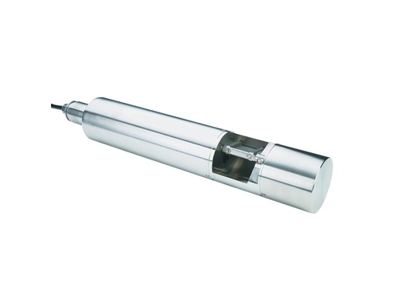
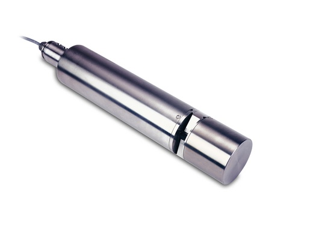
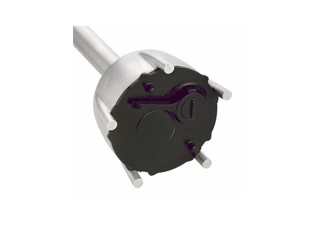
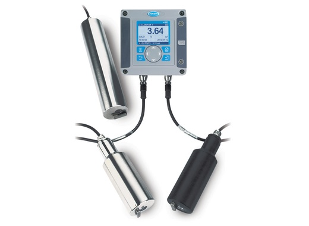
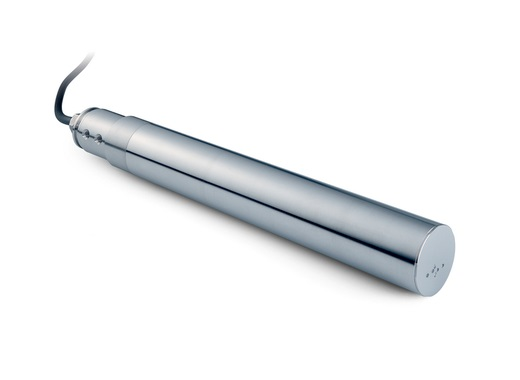
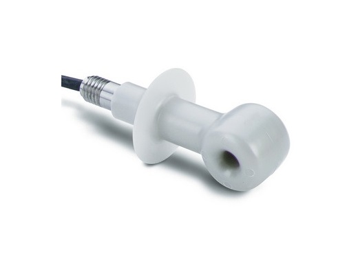
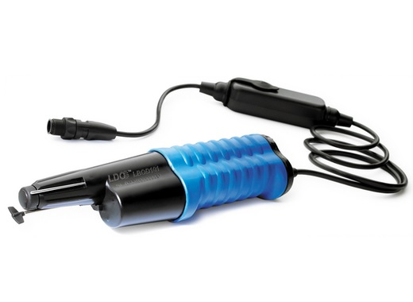

SC1000 - კონტროლერი
მისი გამოყენებით შესაძლებელია ერთდროულად 8 სენსორის და/ან ანალიზატორის მართვა. რამდენიმე sc1000 კონტროლერის გაერთიანებით, კი შესაძლებელია 32 სენსორის და ანალიზატორის ქსელის აწყობა. ასევე აქვს მონაცემების GSM მეთოდით მუდმივი კონტროლის საშუალება.მეტის ნახვა ვიდეო

SC200 - კონტროლერი
მისი საშუალებით შესაძლებელია ერთდროულად 2 სენსორის და/ან ანალიზატორის მართვა. ასევე აქვს მონაცემების GSM მეთოდით მუდმივი კონტროლის საშუალება. მოდბასის, პროფიბასის, ჰარტის საკომუნიკასიო მოდულები, ასევე რელეები და ანალოგური სიგნალების მიღება - გაცემის საშუალებამეტის ნახვა ვიდეო

TU5300 sc / TU5400 sc - უწყვეტი რეჟიმის (online) ლაზერული სიმღვრივის მზომი
სიმღვრივის აღქმის ინოვაციური ტექნოლოგია, 360° x 90°; შეესაბამება როგორც ISO, ასევე EPA სტანდარტს. გაზომვის ერთეულები: NTU / FNU / TE/F / FTU / EBC / mg/L. ნიმუშის ტემპერატურა 4 - 70°C. ექვს ეტაპიანი დაკალიბრება.მეტის ნახვა

მეტის ნახვა ვიდეო
UVAS sc - ორგანული დაბინძურების მზომი
ზომავს ულტრაიისფერი სინათლის შთანთქმას 254 ნანომეტრზე, რითაც ვიღებთ წყალში გახსნილი ორგანიკის შესახებ ინფორმაციას საერთო გახსნილი ნახშირბადის, ან ჟანგბადის ქიმიური მოთხოვნილების შესახებ. არ საჭიროებს რეაგენტებს. აქვს ავტომატური რეცხვის რეჟიმიზომავს ულტრაიისფერი სინათლის შთანთქმას 254 ნანომეტრზე, რითაც ვიღებთ წყალში გახსნილი ორგანიკის შესახებ ინფორმაციას საერთო გახსნილი ნახშირბადის, ან ჟანგბადის ქიმიური მოთხოვნილების შესახებ. არ საჭიროებს რეაგენტებს. აქვს ავტომატური რეცხვის რეჟიმიმეტის ნახვა ვიდეო

მეტის ნახვა
Nitratax - ნიტრატის მზომი
ზომავს ონლაინ რეჟიმში წყალში ნიტრატების არსებობას და რაოდენობას მილიგრამ ლიტრზე. იყენებს ულტრაიისფერ სხივს. აქვს სიმღვრივის ავტომატური კომპენსაცია. არ საჭიროებს რეაგენტებს. შესაძლებელია ტანკში, მილში, ან ბაიპასში დამონტაჟება. განსაზღვრავს ნიტრატებს წყალში, ჩამდინარე წყალში, და აქტივირებულ ლამშიმეტის ნახვა

მეტის ნახვა ვიდეო
SONATAX - ლამის მოცულობის განმსაზღვრელი
ზომავს წყალში არსებული ლამის სიმაღლეს ულტრაბგერითი ტექნოლოგიით. სხვადასხვა პროფილის ლამისთვის აქვს ავტომატური მისადაგების ფუნქცია. აქვს შუშის ავტომატური გაწმენდვის ფუნქცია, რაც უზრუნველყოფს მუდმივ ზუსტ შედეგს. ავტომატურად ახდენს მილების და სხვა მცირე ზომის წინაღობების გამორიცხვას ლამის გაზომვისასმეტის ნახვა ვიდეო

მეტის ნახვა
Solitax - სიმღვრივე და შეწონილი ნაწილაკები
ზომავს 0 – 4000 NTU სიმღვრივეს და 0 – 50 ppm შეწონილ ნაწილაკებს. აქვს სხივის ფანჯრის ავტომატური წმენდა, რაც უზრუნველყოფს ბინძურ და ჟანგბადით გაჯერებულ წყლებში გაზომვის სიზუსტეს. შესაძლებელია დამონტაჟდეს ტანკში, მილში, ბაიპასში, ასევე სპეციალური ჟანგბადის მოსაცილებელ ინსტრუმენტებთან ერთადმეტის ნახვა

AN-ISE sc - ამონიუმის და ნიტრატის მზომი
იონსელექციური ელექტროდის საშუალებით აკეთებს წყალში ამონიუმის და ნიტრატის უწყვეტ გაზომვას. აქვს ავტომატური კომპენსაცია კალიუმის და ქლორიდების მიმართ. მუშაობს SC პლატფორმის კონტროლერებთან. ცდომილება არაუმეტეს 5 % მიღებული შედეგის, ან +0.2 mg/l. განსაზღვრის ქვედა ზღვარი 0.2 mg/L NH4-N და NO3-Nმეტის ნახვა

მეტის ნახვა
TSS sc - შეწონილი ნაწილაკების სენსორი
შეიძლება დამონტაჟება როგორც მილებში ასევე რეზერვუარებში. ანალიზის სისტემა აქვს ორმხრივი, ინფრაწითელი და ლედ განათებები, და ოთხი განათების მიმღები. გაშვებული სხივის გაფანტვას მიმღებები აღიქვამენ 90 და 120 გრადუსებზე, რაც აორმაგებს შედეგების სიზუსტეს. ასევე აქვს მიკრობუშტულების და ტემპერატურის კომპენსაციის პროგრამული ფუნქციაცმეტის ნახვა

მეტის ნახვა
ელექტრო გამტარობის სენსორი
სანიტარული, CIP პროცედურებში გამოყენებადი ელექტრო გამტარობის სენსორი. გაზომვა ხდება ელექტროდის გარეშე. ახლავს 6 მეტრის სიგრძის ანალოგური კაბელი. ცდომილება 0.01%. სამუშაო ტემპერატურა -10 - 200 გრადუსი ცელსიუსით. დიაპაზონი 200 მიკროსიმენსიდან 2000000 მილისიმენსამდე.მეტის ნახვა

pHD პროცეს pH სენსორი
დაბალი pH-ის პროცეს სენსორი. თავსებადია ჰაკის SC კონტროლერებთან. ცდომილება ± 0.02 pH. სამუშაო დიაპაზონი 0 - 14 pH. სამუშაო ტემპერატურა -5 - 70. მაქსიმალური წნევა 10.7 ბარი. კაბელის სიგრძე 10 მეტრი. დაკალიბრების რეჟიმი - ერთ და ორ საფეხურიანი ავტომატური და ხელის რეჟიმშიმეტის ნახვა ვიდეო

რედოქსის სენსორი
უწყვეტი რეჟიმის ონლაინ სენსორი გამოიყენება SC კონტროლერებთან. ზომავს წყალში ოქსიდაციის და აღდგენის პოტენციალს. გაზომვის დიაპაზონი -1500 - 1500 mV. ცდომილება ± 5 mV. სამუშაო ტემპერატურა -5 - 70 გრადუსი. მაქსიმალური წნევა 10.7 ბარი. დაკალიბრების პროცედურა - ერთ ეტაპიანი, ხელის რეჟიმშიმეტის ნახვა

გახსნილი ჟანგბადის სენსორი
უწყვეტი რეჟიმის ონლაინ სენსორი გამოიყენება SC კონტროლერებთან. ლუმინესცენციური გაზომვის მეთოდი. არ სჭირდება დაკალიბრება. არ სჭირდება ელექტროლიტის და მემბრანის შეცვლა. გაზომვის დიაპაზონი 0.01 - 20 მგ/ლ. სამუშაო ტემპერატურა 0 - 50 გრადუსი. pH-ის დიაპაზონი 0 - 12.მეტის ნახვა

NX7500 UV - აზოტის და ნახშირბადის სენსორი
ულტრაიისფერი სინათლის გამოყენებით ახდენს წყალში აზოტის და ნახშირბადის (NO3-N, NO2-N) შემცველობის და რაოდენობის განსაზღვრას. გაზომვის დიაპაზონები: 0.03 - 10 მგ/ლ NO3-N; 0.05 - 15 მგ/ლ NO2-N. სამუშაო ტემპერატურა 2 - 40 გრადუსი. სამუშაო წნევა არაუმეტეს 3 ბარის.

Read More ვიდეო
LBOD101 ოპტიკური სენსორი ჟანგბადის ბიოლოგიური მოხმარების (ჟბმ) განსაზღვრისთვის
სენსორი გამოიყენება HQD პორტატულ მეტრებთან. LBOD101 სენსორი ზომავს გახსნილი ჟანგბადის რაოდენობას. LBOD Intellical probe გამოიყენება საწყისი და საბოლოო გახსნილი ჟანგბადის გასაზომად. სენსორულ თავსახურს მოყვება iButton გამოყენებული დღეების მიკვლევადობისთვის და დარჩენილი ვადის შესატყობინებლად.Read More ვიდეო

SENSION+ იონსელექციური ელექტროდები
გამოიყენება როგორც ლაბორატორიულ, ასევე საველე პირობებში. ზომავს: pH, გახსნილ ჟამგბადს, გამტარიანობას, ჟანგვა-აღდგენითი პოტენციალს, ამიაკს, ამონიუმს, ქლორიდებს, ფტორიდებს, ნიტრატებს, და ნარტრიუმს.Read More

Intellical ™ ISECL181 - ქლორიდების იონოსელექტიური ელექტროდი
წარმოადგენს ციფრულ კომბინირებულ ქლორიდების იონოსელექტიურ ელექტროდს (ISE). ახლავს ჩამონტაჟებული ტემპერატურის საზომი. ელექტროდი ზომავს ქლორიდების რაოდენობას წყალში. გამოიყენება ლაბორატორიულ პირობებში, წყლის და ჩამდინარე წყლის ანალიზისთვისRead More

FP360 sc - წყალში ზეთის განმსაზღვრი სენსორი
ულტრაიისფერი ფლუორესცენციის მეშვეობით ადგენს წყალში მინერალური ზეთის არსებობას, ტალღის სიგრძე 254 ნანომეტრი. განსაზღვრის დიაპაზონი 0 ppb - 150 ppm. pH-ის მოთხოვნა ≥ 4. სამუშაო წნევა 30 ბარამდე. ნიმუშის ტემპერატურა 1 - 40 გრადუსი.მეტის ნახვა
FP360 sc - წყალში ზეთის განმსაზღვრი სენსორი
ულტრაიისფერი ფლუორესცენციის მეშვეობით ადგენს წყალში მინერალური ზეთის არსებობას, ტალღის სიგრძე 254 ნანომეტრი. განსაზღვრის დიაპაზონი 0 ppb - 150 ppm. pH-ის მოთხოვნა ≥ 4. სამუშაო წნევა 30 ბარამდე. ნიმუშის ტემპერატურა 1 - 40 გრადუსი.მეტის ნახვა
FP360 sc - წყალში ზეთის განმსაზღვრი სენსორი
ულტრაიისფერი ფლუორესცენციის მეშვეობით ადგენს წყალში მინერალური ზეთის არსებობას, ტალღის სიგრძე 254 ნანომეტრი. განსაზღვრის დიაპაზონი 0 ppb - 150 ppm. pH-ის მოთხოვნა ≥ 4. სამუშაო წნევა 30 ბარამდე. ნიმუშის ტემპერატურა 1 - 40 გრადუსი.მეტის ნახვა